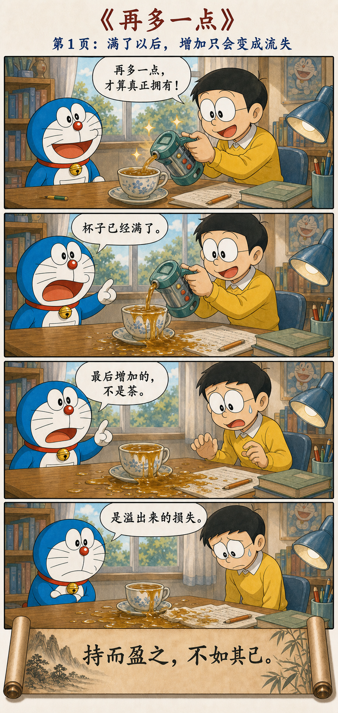
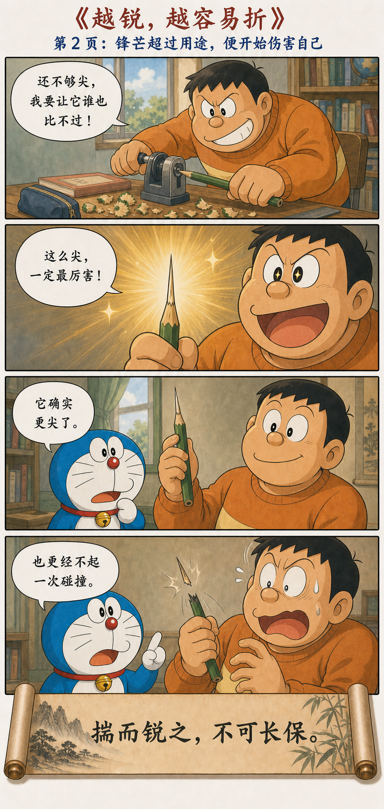
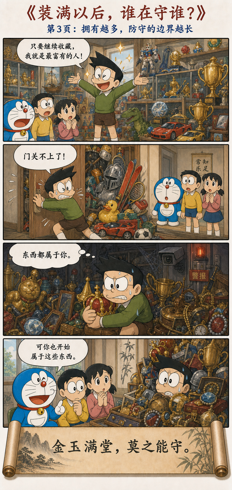
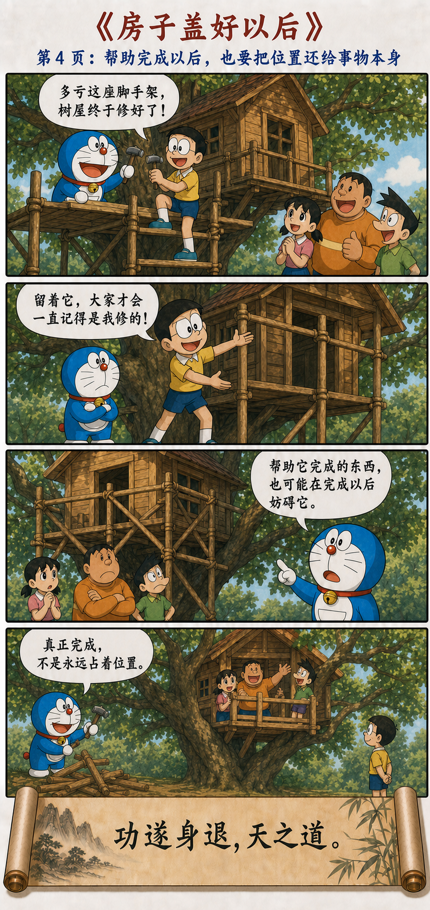

超过分寸，所得也会变成所失
持而盈之，不如其已；
揣而锐之，不可长保。
金玉满堂，莫之能守；
富贵而骄，自遗其咎。
功遂身退，天之道。
To keep filling is not as good as stopping. Hammer and sharpen a point, and it cannot long endure. A hall full of gold and jade cannot be guarded. Wealth and rank with arrogance bring their own trouble. Complete the work and step away: this is heaven's way.
很多损失，都发生在“已经够了”之后
杯满以后再加，得到的是溢出；锋刃超过用途再磨，得到的是脆弱；收藏超过照料能力，拥有变成了防守；功成以后不肯退场，掌声也会挡住下一件事。
第九章不是反对成功，而是在成功最容易令人失去分寸的时刻，提醒人看见边界。
从一杯满茶，到一场该结束的掌声




数量、锋芒、占有与掌声
盈 · 越多越好容量不变时，新增会成为浪费。
锐 · 越强越好极端性能常用韧性作为代价。
藏 · 越满越好超过照料能力，财物就变成负担。
居 · 永不退场占住成果，会阻挡新的循环。
知止，不是做到一半就放弃
“功遂身退”的前提是“功遂”：事情已经完成，责任已经交接。逃避困难不叫退场；因为害怕失败而不敢投入，也不是知止。真正困难的是投入时全力，完成后又不把成果据为永恒身份。
为每件事预先写下停止条件
项目开始时约定何时算完成；投资前确定风险边界；争论前想清楚需要解决什么；管理者培养接班人，让系统不依赖自己的永久在场。能退出，说明成果已经从个人表演变成可持续的秩序。
做成一件事，
也包括不再挡住它的下一步。